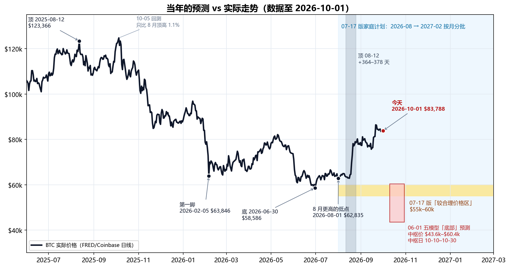
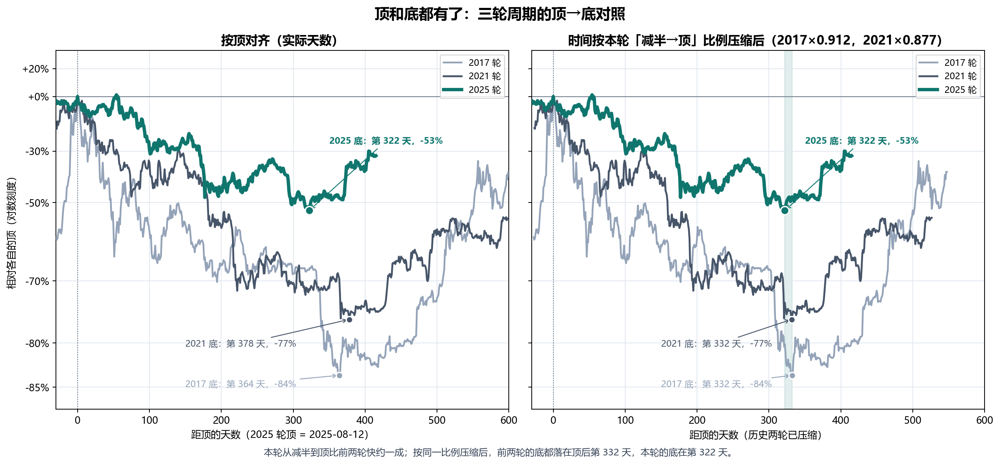
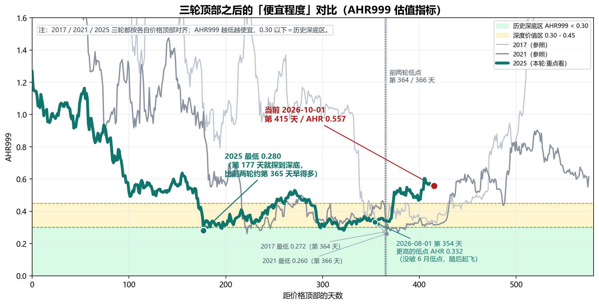
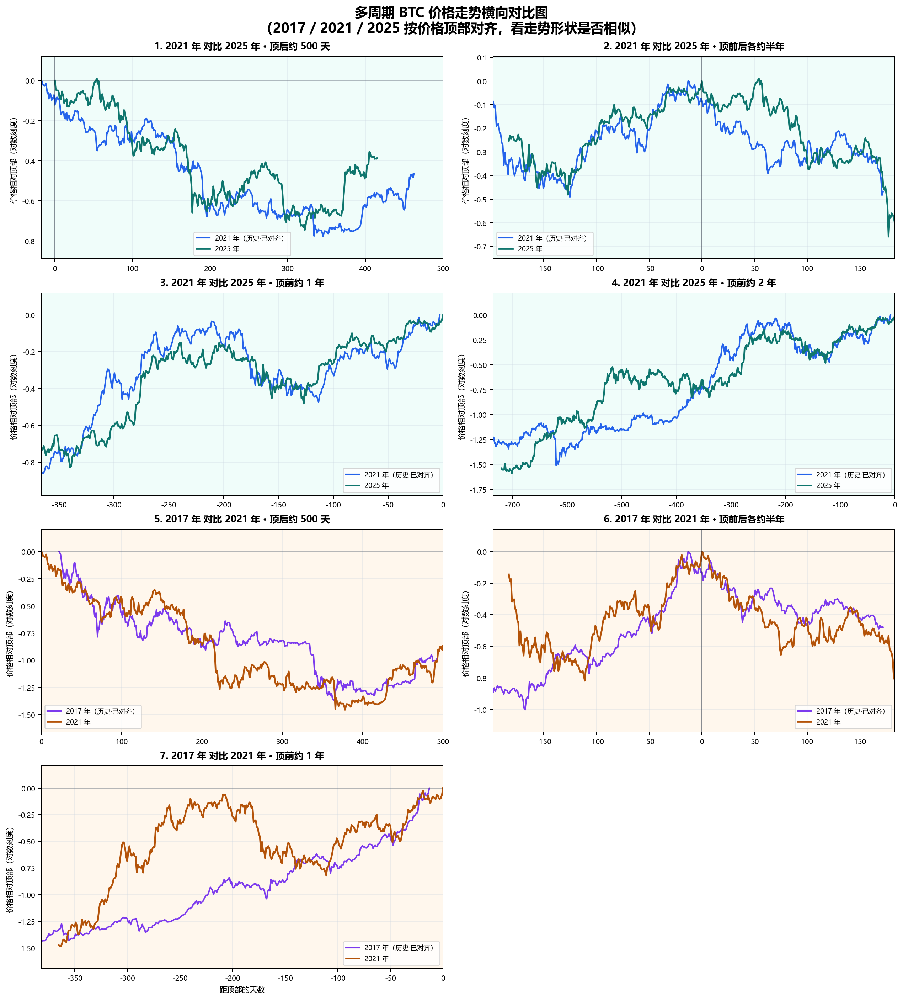
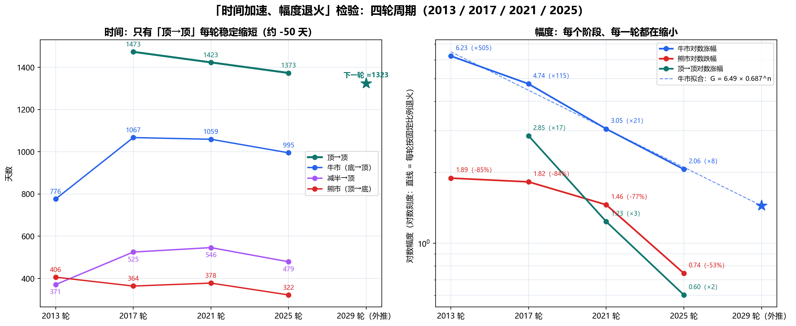
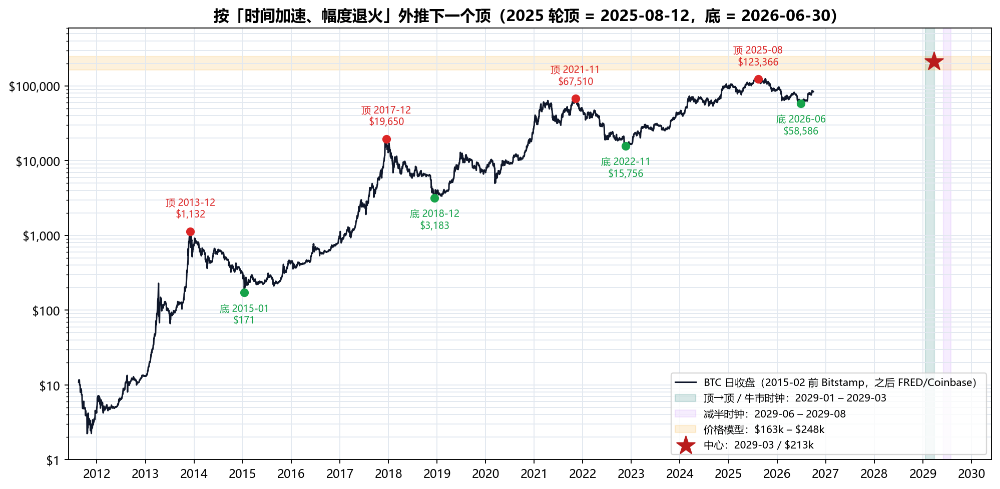
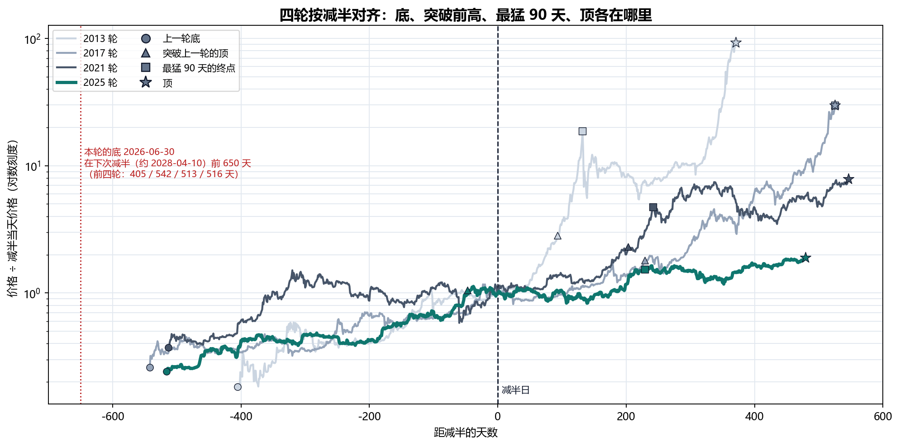

生成日期：2026-10-01 ｜ 2026 年 10 月 · 家庭内部讨论稿 ｜ 上一版：2026-09-22（原文件原样保留，未改动）
目的：10 月第三笔买入到期。用 10-01 的最新价格把全部计算重新抓取、重新计算、重新出图。本版口径统一为：本轮的顶 = 2025-08-12（$123,366），本轮的底 = 2026-06-30（$58,586）。顶和底都有了，本轮周期的尺寸可以直接算出来，不用再靠推测。
本次更新一句话：本轮的顶在 2025-08-12（$123,366），底在 2026-06-30（$58,586）：顶→底 322 天、跌 52.5%。和前两轮比，时间短了约一成（前两轮 364、378 天），跌幅浅得多（前两轮 -84%、-77%）。时间短一成不是偶然：本轮从减半到顶也比前两轮短约一成（479 天，前两轮 525、546 天）；按同一比例缩放，前两轮的底都应落在顶后第 332 天（2026-07-10 前后），实际是第 322 天，只差 10 天。今天 $83,788（比底 +43%，比顶 -32%），AHR999 0.557，在 0.45–1.2 的「定投区」。按「时间加速、幅度退火」外推，下一个顶价格约 $16–25 万；时间上市场时钟指向 2029 年 3 月前后，减半时钟指向 2029 年 8–12 月（§5，只是推算；以后用「重新突破 $12.3 万」「2028-04 减半」「最猛的一波暴涨」这几个路标逐步确定）。家庭计划不变：10 月这一笔照常买。底已经过去，剩下几笔都会比底贵——这是按时间分批的代价，也是它存在的原因。
口径更正：09-22 版有几处（§1 对照表、§2.1、§2.3）把 2025-10-05 的数值最高点（$124,720，只比 8 月顶高 1.1%）当成了「真顶」，并由此推出「10 月 4–18 日还有一个时间底窗口」。这是错的：本轮的顶是 2025-08-12，10-05 只是一次略高的回测。本版全部按 08-12 重算，那个「10 月窗口」不存在。
| 项目 | 09-22 版 | 10-01 版 |
|---|---|---|
| 顶的口径 | 混用 08-12 和 10-05（10-05 被叫作「真顶」，有误） | 统一为 2025-08-12（$123,366） |
| 底的口径 | 06-30 是「至今最低，未必是最终底」 | 2026-06-30（$58,586）就是本轮的底（理由见 §2、§3） |
| 最新价格 | $85,938（当日盘中；FRED 事后修订为收盘 $86,250） | $83,788（10-01 当日盘中） |
| 09-22 之后的走势 | — | 9 天在 $83,483–$84,554 之间窄幅横盘；09-21 的 $86,397 仍是底以来最高收盘 |
| 相对顶（08-12） | -30.3%（09-22 版写的 -31.1% 是相对 10-05） | -32.1% |
| 相对底（06-30） | +47% | +43% |
| 顶后天数（08-12 起算） | 406 | 415 |
| AHR999 | 0.596 | 0.557（定投区 0.45–1.2） |
| 9 月均价 | 截至 09-22 约 $79.2k | 全月 $80,482（9 月收涨 6.2%） |
| 恐惧与贪婪指数 | 78（极度贪婪） | 74（贪婪）；09-23 以来一直在 70–74 |
| 美国现货 ETF 9 月净流入 | 截至 21 日约 +$13 亿 | 全月约 +$26.5 亿；但逐日递减，09-30 转为净流出 $1.49 亿 |
| 长期持有者 | 30 天变化 -2.2 万 BTC（09-20），「卖得越来越少」 | 获利了结又增加：一周已实现利润接近翻倍（Glassnode 09-30）；30 天变化没有新数据 |
| 美国 10 年期国债收益率 | 4.96%（09-22） | 5.26%（09-29，2007 年以来最高） |
| 下一个顶 | 没有算 | $16.3 万–$24.8 万，中位约 $21.3 万；时间：市场时钟约 2029-03，减半时钟约 2029-08～12（按「时间加速、幅度退火」外推，§5；以后用来确定的路标见 §5.6） |
| 下一次减半 / 暴涨 | 没有算 | 减半约 2028-04-10；下一轮最猛的一个季度约 +50%，历史上结束后还要 8–10 个月才见顶（§5.4、§5.5） |
数据说明：本版只有一处历史数据被修订——09-22 当日收盘，从 09-22 版用的盘中价 $85,938 修订为 FRED 正式收盘 $86,250；其余历史数据与 09-22 版相同。今天（10-01）的价格是 Yahoo 当日盘中补点，FRED 正式数据到 09-30（$83,483）。所有价格都是日收盘价。
下图把我们 6 月、7 月做过的主要预测和后来的真实走势画在一起：黄色带是 7 月版家庭计划说的「较合理价格区 $55k–60k」，红框是 6 月五个模型给的「底部」，灰色竖带是「顶 08-12 + 前两轮顶→底天数（364–378 天）」的时间窗。10-05 那个略高的点只是回测，图上用灰字标出。

| 当年的计算 | 当时的结论 | 实际（截至 2026-10-01） | 对/错 |
|---|---|---|---|
| 减半→顶 536 天（2017/2021 两轮平均） | 本轮顶约 2025-10-08 | 顶在 2025-08-12（减半后 479 天） | ❌ 早了 57 天：本轮整体快约一成（§2） |
| 06-01 五模型：底部价格 | 中枢 $43,611–$60,385；共识中位 $57,626 | 底 $58,586（2026-06-30），比共识中位只高 1.7% | ✅ 对 |
| 06-01 五模型：底部时间 | 中枢 2026-10-10 ~ 10-30 | 底在 06-30，早了 3–4 个月 | ❌ 错 |
| AHR999 深底 0.26–0.28 | 本轮也会探到这一带 | 2026-02-05 0.280；2026-06-30 0.281 | ✅ 对 |
| 顶 08-12 + 前两轮顶→底天数（364–378 天） | 2026-08-11 ~ 08-25 附近是时间底 | 这段时间只有更高的低点（08-01 $62,835、08-16 $62,859，08-17 起涨）；真正的底在顶后第 322 天（06-30），早了 42–56 天 | ⚠️ 半对：方向对，时间早了 6–8 周 |
| 退火模型：顶后跌 28%–44% | 本轮跌幅会比前两轮浅很多 | 顶→底 -52.5%，比模型最深的 -44% 还深约 8 个百分点 | ⚠️ 半对：浅是对的，但浅得不够 |
| stepD12 价格区间 | $29k–$57k，中枢 $39k | 底 $58,586 | ❌ 太悲观 |
| 07-17 家庭计划「55–60k 较合理价格区」 | 2026-08 → 2027-02 窗口里大概率能在这一带买 | 底在窗口开始前（06-30）；窗口内最低 $62,835（08-01）；8 月均价 $69,481，9 月均价 $80,482 | ❌ 错（09-22 版已作废这句话） |
| 「W 底」（2 月第一脚 → 6 月第二脚） | 第二脚后反弹 | 06-30 后 +43%（最高 +47%） | ✅ 对 |
| 「真正时间底大概率在 8–10 月」 | 8–10 月还会再跌回来 | 底在 6 月底；8、9 月都没再跌回去（9 月最低 $75,656） | ❌ 错 |
| 长期持有者「刚从派发切到吸筹」 | 支持买入的证据之一 | 8 月上涨后转回派发；09-22 版说「卖得越来越少」，但 9 月下旬价格回到 $84k–87k 后，获利了结又明显增加（§6.2） | ⚠️ 变了，黄灯（未转红） |
怎么读这张表：价格判断基本是对的（底价、AHR 深底、W 底），时间判断错了——而且错的方向一致：顶比「536 天」规律早了 57 天，底也比历史天数早了 6–8 周。本轮不是节奏乱了，而是整个周期比前两轮快了约一成（§2）。代价是：最便宜的那段（6 月底 $58k–62k）落在了家庭计划开始之前。
诚实提示：这张表里的「对」也只是一轮的结果。可对比的成熟周期只有 2017、2021 两轮，任何一条「对了」都不能当成规律被证实，「错了」也不能说明模型全废——它说明的是：时间预测比价格预测更不可靠。这正是当初坚持「按月分批、不赌某一天」的原因。
| 周期 | 顶 | 底 | 减半→顶 | 顶→底 | 顶→底跌幅 | 减半→底 | 上轮底→本轮底 |
|---|---|---|---|---|---|---|---|
| 2017 轮 | 2017-12-16 $19,650 | 2018-12-15 $3,183 | 525 天 | 364 天 | -83.8% | 889 天 | 1,431 天 |
| 2021 轮 | 2021-11-08 $67,510 | 2022-11-21 $15,756 | 546 天 | 378 天 | -76.7% | 924 天 | 1,437 天 |
| 2025 轮 | 2025-08-12 $123,366 | 2026-06-30 $58,586 | 479 天 | 322 天 | -52.5% | 801 天 | 1,317 天 |
| 2025 ÷ 2017 | 0.91 | 0.88 | — | 0.90 | 0.92 | ||
| 2025 ÷ 2021 | 0.88 | 0.85 | — | 0.87 | 0.92 |
减半日：2016-07-09、2020-05-11、2024-04-20。顶、底都是日收盘价。

读法：

| 周期 | 价格顶部 | 日期 | 距顶部天数 | AHR999 | 含义 |
|---|---|---|---|---|---|
| 2017 顶后低点 | 2017-12-16 | 2018-12-15 | 第 364 天 | 0.272 | 历史深底区 |
| 2021 顶后低点 | 2021-11-08 | 2022-11-09 | 第 366 天 | 0.260 | 历史深底区 |
| 2025 第一脚 | 2025-08-12 | 2026-02-05 | 第 177 天 | 0.280 | 本轮 AHR 最低（价格 $63,846） |
| 2025 底 | 2025-08-12 | 2026-06-30 | 第 322 天 | 0.281 | 本轮的价格底（$58,586） |
| 2025 8 月低点 | 2025-08-12 | 2026-08-01 / 08-16 | 第 354 / 369 天 | 0.332 / 0.336 | 底之后的更高低点，随后上涨 |
| 2025 9 月高点 | 2025-08-12 | 2026-09-21 | 第 405 天 | 0.604 | 底以来最高 |
| 当前 | 2025-08-12 | 2026-10-01 | 第 415 天 | 0.557 | 仍在 0.45–1.2「定投区」；9 月全月最低 0.467，没有回到 0.45 以下 |
把 AHR999 换算成今天的价格（AHR999 大致和价格的平方成正比；下面按 10-01 的 200 日均线精确反算）：
| AHR999 | 含义 | 今天大约对应的 BTC 价格 |
|---|---|---|
| 0.30 | 历史深底区上沿 | 约 $61,400 |
| 0.45 | 深度价值区上沿 | 约 $75,300 |
| 0.557 | 今天 | $83,788 |
| 1.20 | 定投区上沿 / 偏热区起点 | 约 $123,100 |
和 09-22 版（约 $61.0k / $74.7k / $122k）相比，三条线都上移了几百到一千美元，因为 200 日均线在缓慢上升（09-22 约 $70,325 → 10-01 约 $70,921）。意思不变：价格回到约 $75k 以下，AHR 才会重新回到「深度价值区」；回到约 $61k 以下才是「历史深底」。今天的价格不算「深度便宜」，只是「不贵」。
方法和 09-22 版相同：把前两轮「后来被证明是真底」的低点，和「熊市中途、之后又被跌破」的低点，都对齐到第 0 天，看本轮 6 月 30 日之后的走法更像哪一种。
| 情形 | 低点日期 | 低点价格 | 低点后 150 天内最大涨幅 | 低点后第 93 天涨幅 | 之后有没有跌破这个低点 |
|---|---|---|---|---|---|
| 2018-12 真底（2017 轮） | 2018-12-15 | $3,183 | +151% | +25% | 没有（之后最低 $3,195） |
| 2022-11 真底（2021 轮） | 2022-11-21 | $15,756 | +94% | +54% | 没有（之后最低 $16,194） |
| 2018-02 熊市中途低点 | 2018-02-05 | $6,905 | +66% | +35% | 有（后来跌到 $3,183） |
| 2022-06 熊市中途低点 | 2022-06-18 | $18,989 | +29% | +3% | 有（后来跌到 $15,756） |
| 2026-06-30 本轮的底 | 2026-06-30 | $58,586 | +48%（进行中） | +43% | 至今没有 |
几条事实：
结论：顶和底的时间互相印证（§2），「底之前反弹小、底之后反弹大」的形态也和前两轮一样（§3）。按本版口径，2026-06-30 的 $58,586 就是本轮的底。保留一条退路：如果以后跌破 $58,586，说明本轮比历史更长、更深，要重新计算（§10）。我们不据此加码，也不据此停手。

和 09-22 版相比，第 1 格（2021 对比 2025·顶后约 500 天）只多了 9 天横盘，读法不变：
| 看什么 | 10-01 版的读法 |
|---|---|
| 顶后跌幅形状 | 前 350 天和 2021 轮高度重合 |
| 起飞时间 | 本轮在顶后第 374 天（2026-08-21）从底涨超 25%；2021 轮是第 431 天（2023-01-13）——本轮比 2021 模板早约 2 个月 |
| 涨跌幅度 | 本轮顶→底 -52.5%，2021 轮 -77%，2017 轮 -84%——每一轮都更浅 |
「减半→顶 536 天」这条规律，本轮早了 57 天；但从减半到顶、从顶到底，各段都按约 0.9 倍同步缩短（§2），说明周期的节奏还在，只是变快了。一个合理的解释是：ETF、公司财库这类低频资金让跌幅变浅、节奏变快。这只是解释，不是结论。
我们这套研究一直有一个中心思想：每一轮周期，时间走得更快（加速），涨跌幅度越来越小（退火）。现在本轮的顶和底都有了，可以把有完整数据的四轮（2013、2017、2021、2025）放在一起检验这个思想，再用拟合出来的规律推下一个顶。2015 年以前的价格用 Bitstamp 交易所的日收盘价（FRED 那时数据太薄，2015-01-14 只有 $120，是异常值）。

相邻两轮的比例（小于 1 = 时间变短 / 幅度变小）：
| 阶段 | 2013→2017 | 2017→2021 | 2021→2025 |
|---|---|---|---|
| 牛市（底→顶）时间 | 1.375 | 0.993 | 0.940 |
| 熊市（顶→底）时间 | 0.897 | 1.038 | 0.852 |
| 顶→顶时间 | — | 0.966 | 0.965 |
| 牛市对数涨幅 | 0.762 | 0.644 | 0.674 |
| 熊市对数跌幅 | 0.964 | 0.799 | 0.512 |
| 规律 | 公式 | 拟合情况 | 推到下一轮 |
|---|---|---|---|
| 时间：顶→顶天数 | 1,473 − 50 × n（n = 0 为 2013→2017） | 三个间隔正好在一条直线上 | 1,323 天 → 2029-03-27 |
| 幅度：牛市对数涨幅 | 6.49 × 0.687ⁿ（n = 0 为 2013 轮） | 四轮对数 R² = 0.99 | 从底涨约 4.2 倍 → $58,586 × 4.2 ≈ $24.8 万 |

| 时间算法 | 下一个顶 |
|---|---|
| 顶→顶每轮少 50 天 | 2029-03-27 |
| 顶→顶按比例缩短（×0.965） | 2029-03-30 |
| 牛市天数按上一轮比例再缩短（×0.940） | 2029-01-20 |
| 牛市天数持平（995 天） | 2029-03-21 |
| 减半→顶按上一轮比例再缩短（×0.877；下次减半约 2028-04-10） | 2029-06-04 |
| 减半→顶持平（479 天） | 2029-08-02 |
| 减半居中（减半落在牛市正中间，见 §5.4） | 2029-12-30 |
| 价格算法 | 下一个顶 |
|---|---|
| 牛市对数涨幅按四轮拟合（每轮 ×0.687） | $24.8 万 |
| 牛市对数涨幅按上一轮比例（×0.674） | $23.4 万 |
| 项目原来的退火系数（波动等级每轮 ÷3、开方，×0.577） | $19.2 万 |
| 顶→顶对数涨幅退火（×0.460） | $16.3 万 |
读法：

| 轮次 | 上一轮底 → 减半 | 减半 → 顶 | 减半在牛市（底→顶）的位置 |
|---|---|---|---|
| 2013 | 405 天 | 371 天 | 52% |
| 2017 | 542 天 | 525 天 | 51% |
| 2021 | 513 天 | 546 天 | 48% |
| 2025 | 516 天 | 479 天 | 52% |
| 下一轮 | 650 天（底 2026-06-30 → 减半约 2028-04-10） | ? | ? |
「暴涨」用两个口径看：突破上一轮的顶（价格进入新高区的那一天），和最猛的 90 天（整个牛市里涨得最快的一个季度）。
| 轮次 | 突破上一轮的顶 | 相对减半 | 突破→顶 | 突破后又涨了 | 最猛的 90 天 | 最猛 90 天结束后到顶 |
|---|---|---|---|---|---|---|
| 2013 | 2013-03-01（> $34） | 减半后 93 天 | 278 天 | 33 倍 | 2013-01 → 04，×16.9 | 239 天 |
| 2017 | 2017-02-23（> $1,132） | 减半后 229 天 | 296 天 | 17 倍 | 2017-09 → 12，×5.3 | 0 天（就是顶） |
| 2021 | 2020-11-30（> $19,650） | 减半后 203 天 | 343 天 | 3.4 倍 | 2020-10 → 2021-01，×3.6 | 304 天 |
| 2025 | 2024-03-04（> $67,510） | 减半前 47 天 | 526 天 | 1.8 倍 | 2024-09 → 12，×1.85 | 250 天 |
读法：
| 路标 | 什么时候看 | 如果是市场时钟（顶约 2029-03） | 如果是减半时钟（顶约 2029-08～12） |
|---|---|---|---|
| ① 重新突破 $123,366（2025 年的顶） | 2027–2028 | 2027 年下半年就突破，明显早于减半（按上一轮在牛市中的位置推算，约 2027-10） | 拖到 2027-12 ～ 2028-02 甚至减半之后才突破 |
| ② 减半（约 2028-04-10）当天的价格 | 2028-04 | 已经站在 $123k 以上，离顶不远 | 还在 $123k 附近或以下 |
| ③ 最猛的 90 天（预计约 +50%） | 2028 年下半年 | 约 2028-08 结束，之后 7 个月左右见顶 | 约 2028-12 ～ 2029-04 结束 |
| ④ 顶 | 2029 | 约 2029-03-27（1–3 月） | 约 2029-08-02 ～ 2029-12-30 |
每过一个路标，就用实际发生的日期替换推算值，重新算一次顶。按历史，突破前高之后到顶要 9–17 个月，最猛的 90 天结束后到顶通常还有 8–10 个月。这两个间隔，是以后确定顶最直接的两把尺子。
| 日期 | 事件 | 来源 |
|---|---|---|
| 09-22 | 全市场单日获利了结约 2.57 万枚 BTC，为 2026 年最多（报道没有区分长期、短期持有者） | CryptoQuant（经 The Block 09-29） |
| 09-23 | BTC 盘中摸到约 $87.3k 后回落，盘中跌破 $84k；全天爆仓约 $5.8 亿，其中多头约 $4.4 亿；同日美股下跌（标普 -0.75%、纳指 -1.13%） | Cryptonomist 09-24；Bitfinex 09-28 |
| 09-22 ~ 09-29 | 美国 10 年期国债收益率从 4.96% 升到 5.26%（2007 年以来最高），10 年期实际利率 2.63% → 2.91%；美元同时走强 | FRED（DGS10、DFII10、DTWEXBGS） |
| 09-23 ~ 09-29 | 美联储官员（Barr、Williams）表示年内可能还要再加息一次，但「不急」 | Admiral Markets、FXStreet（转述） |
| 09-24 | Bitget 交易所被盗约 $3.5 亿；链上没有出现大量 BTC 转入交易所抛售 | Axel Adler Jr 09-25 |
| 09-26 ~ 09-28 | 美国拒绝伊朗重开霍尔木兹海峡的提议，布伦特原油期货涨 3% 以上至约 $107；09-28 开盘 BTC 从 $84.5k 跌到 $82.8k | Al Jazeera 09-28；QCP 09-28 |
| 09-28 | Strategy（原 MicroStrategy）公告：09-21 ~ 27 买入 1,665 BTC，均价 $85,681，总持仓 847,666 BTC | Strategy 8-K（公司公告原文） |
| 09-30 | 8 月 PCE 通胀低于预期（核心同比 3.0%），10 月加息概率从一半左右降到约 35%；BTC 冲到 $85.6k 后又回到 $85k 下方 | Reuters（经 Star-Advertiser）；FXStreet 10-01 |
| 09-30 | 美国现货 BTC ETF 净流出 $1.49 亿，10 个交易日来第一次流出 | Farside（经 Blockchain.news） |
| 监管 | Clarity Act 09-15 程序性投票失败后，参议院至今没有安排新的投票；SEC、CFTC 9 月下旬各自发布加密资产问答；SEC 委员 Peirce 10-02 离任 | Coin Republic 09-27；Elliptic |
要点：09-22 之后的回落，报道里提得最多的是宏观逆风——长期利率升到 19 年来最高、油价因霍尔木兹海峡问题上涨、美元走强、美联储说年内可能还要加息。另一方面，$85k 上方有明显的卖压：Glassnode 说 Binance 现货盘口 $85k–85.5k 的卖单墙 09-24 以后扩大到约三倍；Bitfinex 说约 65 万枚 BTC 的买入成本在 $85k–86.5k 之间（意思是：这一带买入的人一回本就容易卖）。ETF 资金仍在流入，但一天比一天少，最后一天转成流出。
| 口径 | 09-22 版 | 10-01 版 | 含义 |
|---|---|---|---|
| 美国现货 BTC ETF 持币 | 约 1,263,265 BTC（09-21，Bitbo） | 约 1,292,181 BTC（09-30，Bitbo，同一来源） | 9 天又增加约 2.9 万枚 |
| ETF 净流入 | 8 月 +$35.2 亿；9 月至 21 日约 +$13 亿 | 9 月全月约 +$26.5 亿（其中 09-22 ~ 30 约 +$13.4 亿）；09-21 ~ 25 一周 +$23.9 亿，是 2026 年最好的一周 | 仍是主要买盘，但逐日递减：09-21 起依次为 +$9.99 亿、+$7.15 亿、+$3.47 亿、+$1.91 亿、+$1.35 亿、+$0.31 亿、+$0.66 亿，09-30 -$1.49 亿 |
| ETF 平均成本 | 约 $82k（CoinDesk）/ 约 $86k（Glassnode） | 约 $81.9k（Bitfinex 09-30） | 今天价格略高于 ETF 平均成本 |
| 公司 + 政府财库 | 约 1,914,382 BTC | 约 1,917,676 BTC（CoinGecko，193 家） | 小幅增加；Strategy 一周买 1,665 枚，也有公司（Sequans）清仓卖完 |
| 长期持有者（LTH）获利了结 | 30 天变化 -2.2 万 BTC（09-20，CryptoQuant，二手转述），「卖得越来越少」 | Glassnode 09-30：截至 09-29 的一周，LTH 已实现利润接近翻倍，占全部已实现利润的比例从 34% 升到 55% | 价格回到 $84k–87k 后，长期持有者卖得更多了 |
| LTH 30 天变化（CryptoQuant） | 09-20 -2.17 万 | 09-20 之后没有找到新的公开数字 | 无法确认是否还在收窄 |
| 杠杆 | 突破后新增约 $20 亿杠杆 | 期货持仓从 09-21 的 70 万枚以上降到 09-29 的 64.4 万枚，1 月以来最低（Bitfinex） | 杠杆已经被洗掉一大部分 |

必须如实讲清楚的一点：09-22 版说长期持有者「卖得越来越少」（30 天变化从 -10.6 万收窄到 -2.2 万），并把这条信号评为黄灯。这 9 天的新数据方向相反：价格回到 $84k–87k 之后，长期持有者的获利了结明显增加。
我们的解读：这仍然是上涨中、在高位把币卖给新买家（ETF、Strategy 这类），不是 6 月那种下跌中的恐慌性卖出；CryptoQuant 的分析师也说长期持有者的平均获利幅度（约 72%）远低于 2024 年 12 月（约 350%），属于「温和」。按 §10 的规则，红灯的标准是「在下跌中持续派发、30 天变化再次扩大到 -10 万枚以上」，目前没有达到（也没有 09-20 之后的 30 天数据）。所以：黄灯维持，不转红；但「卖得越来越少」这句话要收回。
对我们的意义：情绪从极度贪婪降回贪婪、杠杆被洗掉，短期过热的程度比 09-22 低；但宏观逆风（利率、油价、美元）和 $85k 上方的卖压都还在。底之后的上涨从来不是一条直线：2022-11 那次真底之后的一年里，就有三次 18%–20% 的回撤（2023 年 3 月、6 月、9 月），短期回落是正常的。这些都不改变家庭计划——它们正好说明为什么不能靠猜短期方向来决定买不买。
价格从 $58k 涨到 $86k、再回到 $84k，和它从 $123k 跌到 $58k 一样，都不改变 BTC 的第一性原理：账本仍可信、2100 万上限未变、共识未破裂、自托管属性仍在、安全预算没有失效。涨了不代表协议更好，跌了也不代表协议坏了。真正会破坏 BTC 的，仍然是：上限被修改、全节点验证严重中心化、矿工被可控实体集中、长期手续费撑不住安全预算，或者市场不再认为它是最可信的数字稀缺资产。
7 月版的理由一条都没有变：BTC 没有股息、没有经营利润，价格来自共识和稀缺性重估；高波动，判断对了也可能熬很久；有集中化、托管、监管、ETF 赎回、财库踩踏风险。
09-22 版加了一条：涨了之后最容易犯的错，是「后悔没多买」然后临时加码。这一版再加一条：底已经过去之后，另一个常见的错是「等它跌回底部再买」——把该买的那一笔拖着不买，想等 $58k 再来。本轮从顶到底跌了 52.5%，又从底部涨了 47%；接下来涨跌都可能发生，仓位上限和买入节奏必须继续提前定死。
| 纪律 | 说明 |
|---|---|
| 不用养老钱 | 父母生活安全永远优先 |
| 不用应急金 | 医疗、家庭现金流、房屋支出优先 |
| 不借钱 | 杠杆会把长期判断变成短期爆仓 |
| 不一次买完 | 按月分批到 2027-02 |
| 不因为涨了而加码 | 「错过了便宜价」不是加钱的理由 |
| 不为了等低点而拖延 | 底已经在 6 月出现，不要等价格跌回 $58k 才买；10 月这一笔照常买 |
总额不变，节奏不变，价格口径按 10-01 重算。
| 时间 | 动作 | 价格口径（10 月更新） |
|---|---|---|
| 2026-08 | 第一笔（已到期） | 8 月均价约 $69.5k |
| 2026-09 | 第二笔（已到期） | 9 月均价约 $80.5k |
| 2026-10 | 第三笔（本月） | 今天 $83,788，AHR 0.557（定投区）。照常买这一笔；不加码，也不为了等更低的价格而拖延 |
| 2026-11 | 第四笔 | 同时复查长期持有者 30 天变化（§6.2、§10 的黄灯是否转红） |
| 2026-12 | 第五笔 | 不因为短期涨跌改变总额度 |
| 2027-01 | 第六笔 | 继续保持小额、无杠杆 |
| 2027-02 | 最后一笔，结束本轮计划 | 买完后停止追加计划外仓位 |
价格参考（10-01 重算；只作参考，不是触发器）：
一句话：底在 6 月就过去了，剩下几笔都会比底贵。这是按时间分批的代价，也是它存在的原因——我们没有猜中底部的时间，但也没有因为猜错而全部错过。
| 信号 | 说明什么 | 动作 |
|---|---|---|
| 跌破 $58,586（本轮的底） | 6 月不是底；本轮比历史更长、更深 | 继续按月买，不加码；重新计算底部 |
| AHR999 > 1.2（今天约 $123k） | 进入偏热区 | 暂停剩余几笔 |
| 长期持有者在下跌中持续派发：30 天变化再次扩大到 -10 万 BTC 以上，且价格同时在跌 | 强手在下跌中离场 | 暂停买入 |
| 现状（09-29，Glassnode）：价格回到 $84k–87k 时获利了结增加，一周已实现利润接近翻倍；仍是上涨中的获利了结；30 天变化 09-20（-2.2 万）之后没有公开数据 | 🟡 黄灯，不是红灯（「卖得越来越少」已收回） | 照常；11 月复查 30 天变化 |
| 2100 万上限或核心共识出现实质破坏 | 第一性原理被破坏 | 立即重新评估 |
| 自托管、出入金、转账自由被系统性压制 | 核心属性受损 | 暂停买入 |
| 家庭现金流或应急金需要钱 | 生活优先 | 停止买入 |
| 买入后心态变成想梭哈、借钱、追涨 | 纪律失守 | 停止买入 |
9 月 22 日我们说：价格说对了，时间说错了。这一版把口径理清楚了：本轮的顶在 2025 年 8 月 12 日，底在 2026 年 6 月 30 日——顶和底都有了。从顶到底用了 322 天、跌了一半多（-52.5%），比前两轮快约一成、浅得多。
我们当初以为底在 10 月前后，实际在 6 月底就到了。按月分批让我们不需要猜中：底在计划开始前就过去了，剩下几笔会比底贵，这是代价；但我们也没有因为猜错而一笔都没买，或者一次买在高点。
我们也按「时间越来越快、幅度越来越小」的规律推了下一个顶：价格大约 $16–25 万；时间在 2029 年，早的话 3 月前后，晚的话 8–12 月——要看以后价格什么时候重新突破 $12.3 万、2028 年 4 月减半时价格在哪里。涨幅一轮比一轮小，所以不要期待过去那种十几倍、几十倍的行情；这只是按四轮历史推出来的近似值，不是保证。
我们希望得到的支持和 7 月、9 月一样：不是相信 BTC 一定涨，而是支持一个有边界、小额、按月分批、不加码的长期配置实验。这笔钱可以亏、可以等很多年，但不能让父母承担心理和现金流压力。
内部数据与脚本（本版全部新生成，旧版文件均未改动）：
data/btc_merged_daily.csv：BTC 日线合并数据，已更新至 2026-10-01（FRED CBBTCUSD 至 09-30 + Yahoo 10-01 当日补点）。与 09-22 版相比只修订了 1 行（2026-09-22 当日收盘 $85,938 → $86,250）。analysis_runs/2026-10-01_parent_btc_allocation_report/：本版报告目录（脚本从 09-22 版复制；口径改为顶 2025-08-12、底 2026-06-30；report.css 改为长表格可以跨页）。make_cycle_top_bottom.py → png/cycle_top_bottom_alignment.png、cycle_top_bottom_summary.csv（§2.1，本版新增）。make_forecast_vs_actual.py → png/forecast_vs_actual.png、png/bottom_aligned_rebound.png、forecast_scorecard.csv、rebound_comparison.csv（§1、§3）。make_ahr999_cycle_overlay.py → png/ahr999_cycle_overlay_peak_aligned.png、ahr999_recalc_to_2026-10-01.csv、ahr999_cycle_overlay_summary.csv（§2.2）。make_peak_structure_charts.py → png/peak_structure_all_windows_grid.png（§4）。make_real_user_charts.py → png/real_user_structure_change.png（§6）；LTH 基准点来自本目录 lth_metrics_2026-10-01.csv（与 09-22 版相同：这 9 天没有找到新的 LTH 供应公开数字）。report_numbers_2026-10-01.py → report_numbers_2026-10-01.txt：§0–§3、§6.3 其余数字（价格位置、AHR 反算价格、历史基准率、底前/底后反弹、2022 年底之后的回撤）。analysis_runs/2026-10-01_cycle_time_amplitude_fit/：§5 的全部计算（本版新增）。fit_cycles.py → cycle_phases.csv（四轮锚点和各阶段天数、幅度）、phase_ratios.csv（相邻两轮比例）、next_top_models.csv（时间、价格模型）和两张图（本目录 png/phase_time_amplitude.png、png/next_top_projection.png 是从那里复制的）；SUMMARY.md 是文字版。2015 年以前的价格来自同目录 bitstamp_btcusd_daily_2011_2015.csv。§5.4–§5.6 的减半、突破前高、最猛 90 天来自同目录 fit_halving_surge.py → halving_surge_table.csv、next_cycle_milestones.csv、png/halving_surge_aligned.png（本目录 png/ 里有一份复制）；2013 轮的「前高」（2011-06-11 $33.80）来自同目录 blockchain_market_price_2010_2011.csv。visualization/2026-10-01/：整条分析流程（step01–05、stepA1–A3、stepB4、stepC1）按新数据重跑的全部输出。注意：其中 stepC1 按「数值最高点」自动取顶（2025-10-05），与本报告口径不同，本报告不引用它的天数和路径。output/core_points_2026-10-01/：stepD1–D14 核心点分析按新数据重跑的输出（原 output/core_points/ 保留为 7 月版不动）。stepD12 的时间区间同样按 10-05 计算，本报告只引用它当年给的价格区间。analysis_runs/2026-06-01_parent_report/tables/model_average_inputs.csv：6 月五模型底部预测原文（§1 对照表的「当时的结论」）。visualization/2026-07-17/stepC1_bottom_forecast.txt：7 月版退火模型原文（§1「顶后跌 28%–44%」）。外部来源（09-22 版各项数字的来源见 09-22 版报告 §11）：
说明：以上外部数字由一次网络检索整理，均附日期与链接；二手转述的已注明。其中 FRED 10 年期收益率、恐惧与贪婪指数、Bitbo ETF 持币、CoinGecko 财库、TFTC 9 月流量、Glassnode 第 39 周的数字，已逐项打开原页面再次核对。不同机构的 ETF 持币、LTH 口径不同，本报告不做跨口径相减。
免责声明：本报告是家庭内部研究材料，不是投资顾问建议。BTC 属于高波动、高不确定性资产，只适合小额、长期、可承受损失的资金。